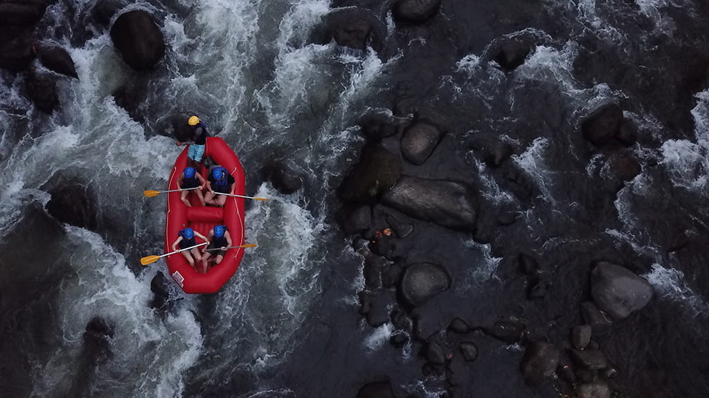
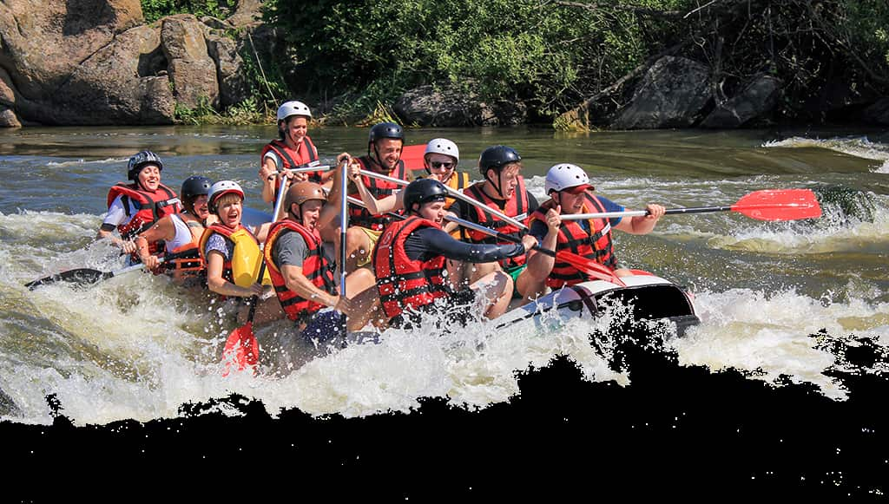
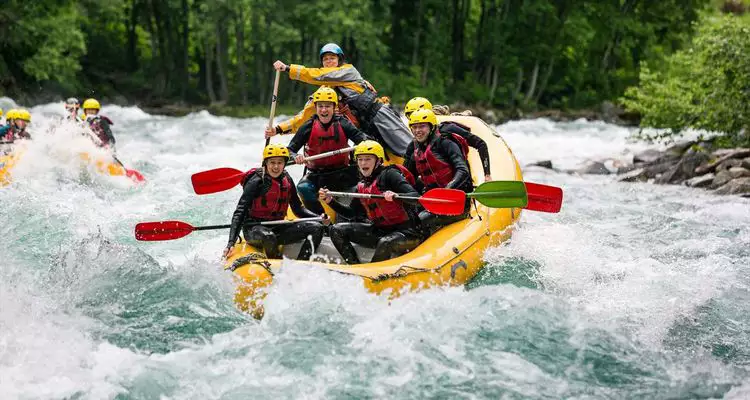
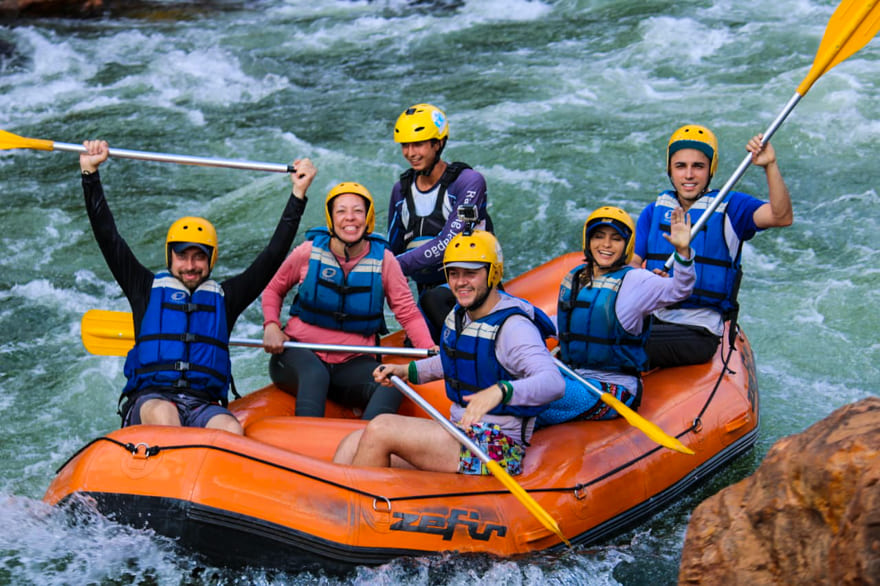
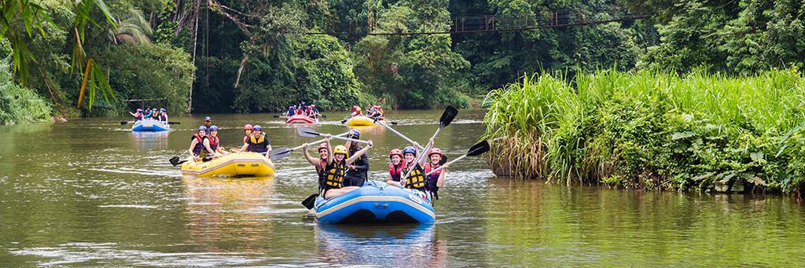
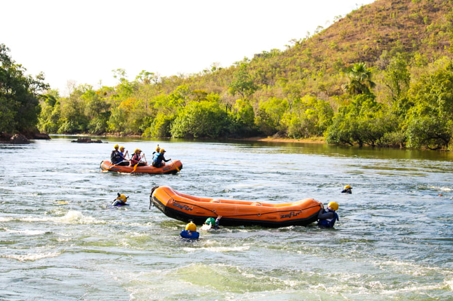
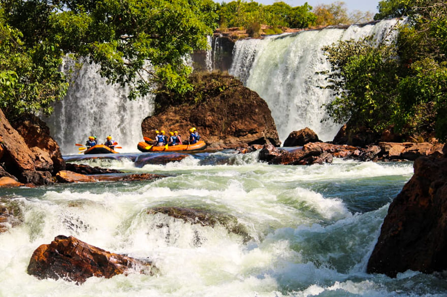
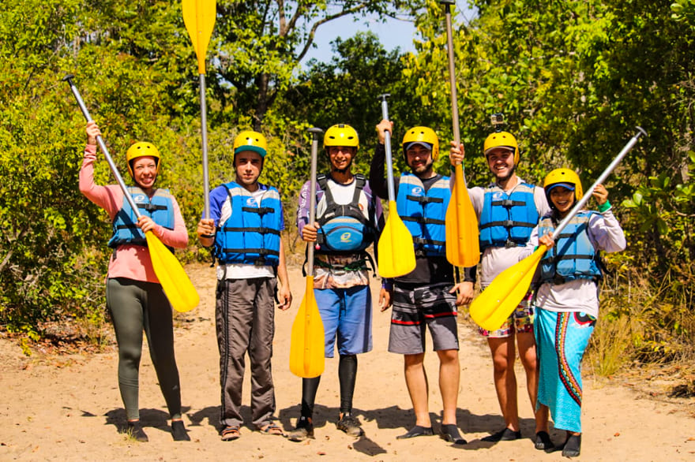

Nossa missão é proporcionar experiências inesquecíveis, oferecendo aventura, segurança e contato com a natureza para nossos clientes.



Nossa missão é proporcionar experiências inesquecíveis, oferecendo aventura, segurança e contato com a natureza para nossos clientes.
Nossa empresa nasceu da paixão pela natureza e pelos esportes de aventura. Desde o início, buscamos proporcionar experiências emocionantes e seguras para pessoas que desejam conhecer os rios de uma maneira diferente.

Com o passar dos anos, nossa equipe cresceu e passamos a oferecer diferentes passeios. Hoje nosso objetivo continua sendo proporcionar diversão, segurança, contato com a natureza e momentos inesquecíveis para nossos clientes.




